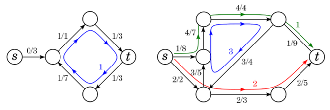
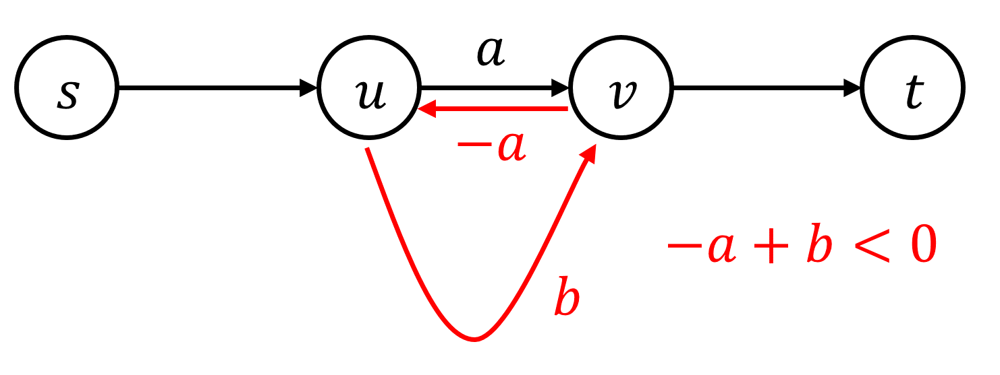
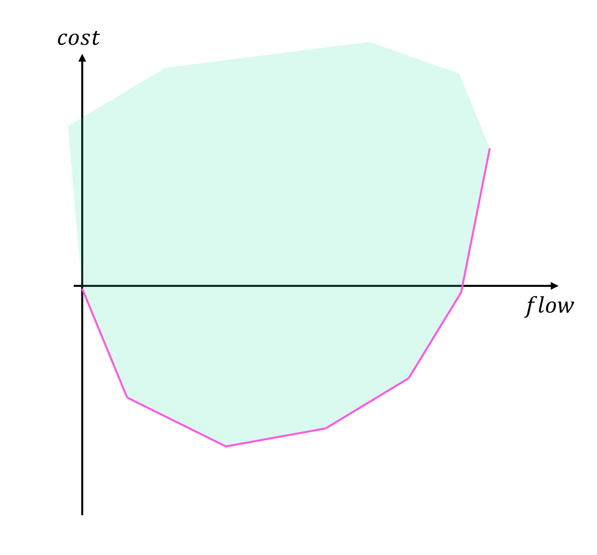

Minimum Cost Maximum Flow¶
Definition¶
Minimum cost maximum flow 문제를 정의하기 위하여, flow network에 다음과 같이 cost의 개념을 정의하자.
Definition 1
Flow network \((G, c, s, t)\)와 cost function \(a\) (\(a : E \rightarrow \mathbb{R}\))가 주어질 때, flow \(f\)의 비용 cost를 다음과 같이 정의한다.
새로 추가된 cost의 개념에도 전과 같이 residual flow network \(G_f\)를 구할 수 있다. 반대 방향 간선의 경우, 이미 만들어진 flow를 취소할 수 있어야 하니, 이미 사용한 가중치를 돌려받기 위하여 해당 가중치의 부호를 뒤집어 설정한다.
Definition 2
Flow network \((G, c, a, s, t)\)와 flow \(f\)가 있을 때, residual flow network \(G_f\)를 다음과 같이 정의한다.
\(G_f\)의 정점 집합은 \(G\)와 같으며, 각 간선 \(e=(u, v) \in E\)에 대하여
\((u, v)\) 방향으로 \(c_f(e)=c(e)-f(e)\), \(a_f(e)=a(e)\),
\((v, u)\) 방향으로 \(c_f(e)=-f(e)\), \(a_f(e)=-a(e)\)
의 capacity와 cost의 간선을 \(G_f\)에 추가한다.
가중치 \(0\)의 간선은 무시할 수 있다.
Minimum cost maximum flow 문제는 Maximum Flow를 갖는 flow들 중, cost의 최솟값을 구하는 것이다.
Definition 3
Minimum Cost Maximum Flow 문제는 Maximum Flow를 갖는 flow들 중, cost의 최솟값을 구하는 것이다.
Property 1
Flow network \((G, c, s, t)\)와 flow \(f\)가 있을 때, \(f\)는 유한 개의 path와 cycle로 분해 가능하다. 각 Path와 Cycle들은 양의 가중치를 갖고 있으며, 각 간선의 가중치는 간선이 포함되는 Path와 Cycle의 가중치 합과 같다.
만약 \(val(f)=0\)이라면, path는 없고 cycle들로만 분해된다.

Successive Shortest Path Algorithm¶
우선, 우리가 문제를 해결할 flow network \((G, c, a, s, t)\)는 negative cycle이 존재하지 않는다고 생각한다.
기본적인 알고리즘의 틀은 Ford-Fulkerson과 Edmond-Karp와 같이 \(G_f\)에서 어떤 경로를 찾는데, 이 경로를 최단경로로 반복하여 탐색한다.
Algorithm 1
Flow network \((G, c, a, s, t)\)가 주어진다.
flow \(f\)를 \(0\)으로 초기화한 후, \(G_f\)에서 \(s \rightarrow t\) 경로가 존재하지 않을 때까지 \(s \rightarrow t\)의 cost에 대한 최단경로를 구하고, 최단경로를 따라 capcity의 최솟값에 해당하는 flow \(f'\)를 찾고, \(f \leftarrow f+f'\)로 업데이트한다.
\(f\)가 Minimum Cost Maximum Flow이다.
위 알고리즘의 정당성을 보이기 위하여 다음 2가지 성질을 이용하자.
Property 2
Negative cycle이 없는 flow network \((G, c, a, s, t)\)가 주어지고, \(G\)에서 \(s \rightarrow t\)의 cost에 대한 최단경로를 \(P\)라 하자. \(P\)에 어떤 가중치 \(\gamma\)를 흘려보낸 flow를 \(f\)라 할 때, \(G_f\) 또한 negative cycle이 존재하지 않는다.
Proof
원래 negative cycle이 없던 그래프에 \(f\)를 흘리고 나니 negative cycle이 생기기 위해서는 \(P\)에 flow를 흘림으로서 \(G_f\)에 생성된 새로운 간선들을 포함하는 negative cycle이 생겨야 한다.

하지만 위 그림처럼 \(P\)에 포함되는 \((u, v)\)가 있고, \(G_f\)에서 \((v, u)\)를 포함하는 negative cycle이 생겼다고 하면, \(-a+b<0\)이 성립하며, \(b<a\)가 된다. 하지만 이는 \(P\)가 최단경로임에 모순이다. 이러한 논리는 negative cycle이 하나의 간선만 포함하지 않을 때도 성립하며, 엄밀한 증명은 Property 1의 decomposition을 이용하여 할 수 있다.
Property 3
Flow network \((G, c, a, s, t)\)와 flow \(f\)가 주어질 때 다음 명제는 동치이다.
- \(G_f\)에는 negative cycle이 존재하지 않는다.
- \(f\)는 value \(val(f)\)를 갖는 flow 중 cost가 최소이다.
Proof
\(f\)가 value \(val(f)\)를 갖는 flow 중 cost가 최소라 가정하자. 만약 \(G_f\)에 negative cycle \(C\)가 존재한다면 \(C\)에 양의 flow를 흘리면 같은 value이지만, cost가 더 작은 flow를 만들 수 있다. 이는 \(f\)가 cost가 최소임에 모순이다.
\(G_f\)에 negative cycle이 존재하지 않는다고 가정하자. 만약 \(f\)가 value \(val(f)\)를 갖는 flow 중 cost가 최소가 아니라면, 같은 \(val(f)\)를 갖는 최소 flow \(f'\)가 존재한다. \(f'-f\)는 \(val(f'-f)=0\)이고, \(cost(f'-f)<0\)이다. Property 1에 의해 \(f'-f\)는 여러 개의 cycle들로 분해되어야 하는데, \(cost(f'-f)<0\)이니 적어도 하나의 negative cycle이 존재해야 한다.
Flow network \((G, c, a, s, t)\)에 negative cycle가 존재하지 않는다면, Property 2에 의해 계속하여 augmenting path를 최단경로로 선택하면 \(G_f\)에도 negative cycle이 존재하지 않으며, Property 3에 의해 이는 해당 value에서의 minimum cost flow임이 보장된다. Algorithm 1은 universal algorithm for maximum flow의 일종이니, maximum flow를 찾을 수 있음을 보장할 수 있다. 따라서, Maximum Flow를 갖는 flow들 중, cost의 최솟값을 성공적으로 구할 수 있다.
최단경로를 Bellman-Ford 알고리즘을 이용하여 구해주면 augmenting path를 한번 탐색하는데 \(O(VE)\)의 시간이 걸리고, maximum flow의 크기를 \(F\)라 하면 전체 \(O(FVE)\)이다. 하지만 실제 구현에서는 SPFA를 이용하면 평균 시간복잡도 \(O(FE)\)에 문제를 해결할 수 있다.
Complexity
Time Complexity : \(O(FVE)\) (average : \(O(FE)\))
Implementation¶
Convexity¶
MCMF의 가장 중요한 정리는 흐르는 value에 대한 min cost의 함수 \(f\)가 convex 한 함수라는 것이다. 이를 증명하기 위해 다음 성질을 이용하자.
Property 4
Algorithm 1의 실행 과정에서 \(s \rightarrow t\)의 cost에 대한 최단경로는 단조증가한다.
Proof
Algorithm 1에서 flow \(f\), \(g\), \(h\)가 연속적으로 등장하는 flow라고 가정하자.
- \(G_f\)에서 최단경로 \(P\)를 찾고, \(\alpha\)의 flow를 \(P\)를 따라 흘려 flow \(g\)를 얻었다.
- \(G_g\)에서 최단경로 \(Q\)를 찾고, \(\beta\)의 flow를 \(Q\)를 따라 흘려 flow \(h\)를 얻었다.

최단경로 \(P\)보다 최단경로 \(Q\)가 더 짧다면, 위 그림과 같이 (flow, cost) 그래프에서 \(f\)와 \(g\)를 잇는 직선의 기울기보다 \(g\)와 \(h\)를 잇는 직선의 기울기가 더 작아야 한다. 하지만 이렇다면 \(g\)보다 \(f\)에 \(h-f\)를 \(g\)와 같은 value를 가지도록 \(\frac{\alpha}{\alpha+\beta}\)를 곱하여 더한, \(f+(h-f)\frac{\alpha}{\alpha+\beta}\)가 더 작은 비용을 가진다는 것을 알 수 있다. 따라서 \(g\)가 최소 cost flow임에 모순이다.
위 정리로 인하여 (flow, cost) 그래프를 그리면 기울기가 단조증가하는, convex 한 그래프를 확인할 수 있다.
Property 5
각 value에 대한 minimum cost를 (flow, cost) 그래프로 표현하면 그래프는 기울기가 단조증가하는 convex한 모양이다.
Flow의 조건과 cost의 식이 모두 linear programming의 조건이라 생각할 수 있으니, flow와 cost를 포함한 모든 변수들은 convex polyhedron을 구성한다. Minimum cost flow 문제는 convex polyhedron을 (flow, cost)의 좌표평면에 사영한 모습이니, 이 또한 convex하다는 사실을 다르게 증명할 수도 있다.
Property 6
Flow의 조건과 cost의 식이 모두 linear programming의 조건이라 생각할 수 있으니, flow와 cost를 포함한 모든 변수들은 convex polyhedron을 구성한다. Minimum cost flow 문제는 convex polyhedron을 (flow, cost)의 좌표평면에 사영한 모습이니, 도형은 convex하고 y좌표의 최솟값을 따라 직선을 이어도 convex하다.
